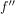

konkave Funktion und Monotonie der Ableitung bzw. zweite Ableitung
1. Satz
Sei  eine zweimal differenzierbar Funktion.
Dann sind folgende Aussagen äquivalent:
eine zweimal differenzierbar Funktion.
Dann sind folgende Aussagen äquivalent:
 ist konkav
ist konkav ist monoton fallende reelle Funktion
ist monoton fallende reelle Funktion-  ist nichtpositiv
Sei eine zweimal differenzierbar Funktion.
Dann sind folgende Aussagen äquivalent:
ist konkav ist monoton fallende reelle Funktion